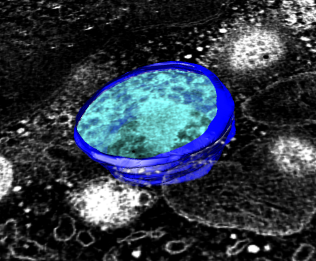

The mask command extracts a volume subregion bounded by surfaces and creates a new volume data set.
mask <volume-id> <surface-id> [axis <x,y,z>] [fullmap] [pad <distance>] [sandwich]
mask #0 #1,2 axis 0,1,0 fullmap pad 5.0 sandwich
<volume-id> - Id number (as indicated in Model Panel) of the volume to be masked.
<surface-id> - Id numbers of one or more surfaces defining the masked region.
axis <x,y,z> - Projection axis vector (default is z axis 0,0,1). This is relevant if the surfaces have holes. The region between surface layers parallel to the specified axis is computed. The vector can be in any direction (need not be parallel to x, y, or z axis) and does not need to have unit length.
fullmap - The computed masked volume is in general smaller than the original map with bounds taken to minimally enclose the surfaces. The fullmap option causes the masked volume to have size equal to the original volume.
pad <distance> - Before computing the masked volume move the surface along the surface normals by the specified distance. This allows masking a larger or smaller region than is enclosed by the original surface. Positive and negative values are valid. The distances is in physical units (Angstroms or nanometers), the same units used for the maps and surfaces.
sandwich - With this option the mask volume will be limited to the volume voxels lying between two surface layers. Without this option the volume projected along the axis beyond a single surface layer is also included. See Algorithm discussion for details.
The masked volume is computed by looking at intercepts of a line parallel to the projection axis (default z-axis) with the surfaces. If there are N intercept points for a given line, the volume data between the 1st and 2nd, 3rd and 4th, 5th and 6th, ... intercepts are included in the masked volume while those between the 2nd and 3rd, 4th and 5th, ... are excluded. The intercepts are computed for lines through grid points on a rectangular grid perpendicular to the projection axis with grid spacing equal to the minimum grid plane spacing of the volume data set. For each volume voxel the intercepts of the closest grid line are used to determine inclusion in the masked volume. If there are an odd number N of intercept points then points beyond the final intercept are included in the masked volume unless the "sandwich" option is used. The computed volume is a minimal subregion of the original volume containing the surfaces with values set to zero outside the masked region and to the original volume values inside the region. The grid points of the calculated volume align exactly with those of the original volume.
This command currently uses the full size of the original volume data set even if only a subregion is being displayed.
October 25, 2007 - Developed for Jeff Triffo to extract layers of EM tomograms between surfaces traced in IMOD.